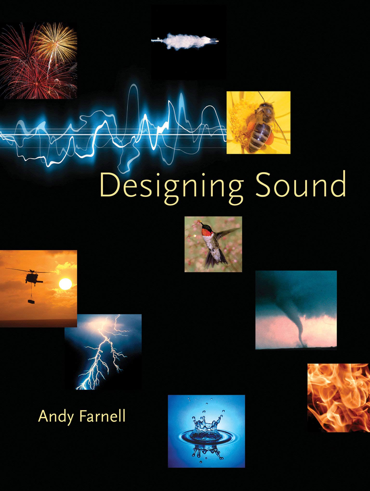
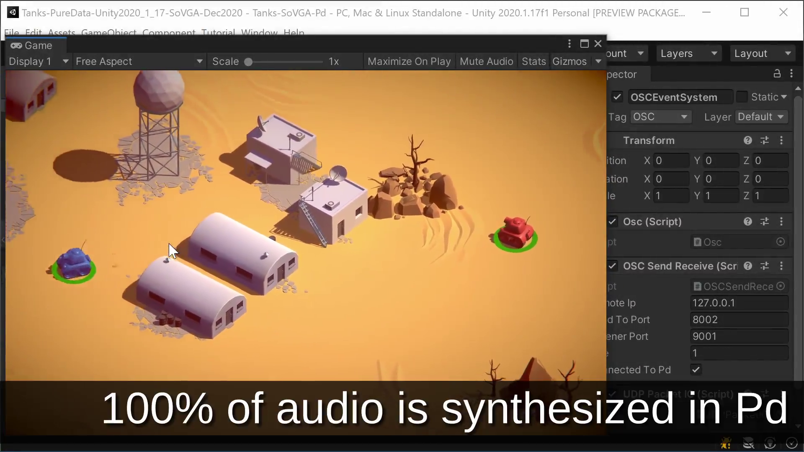
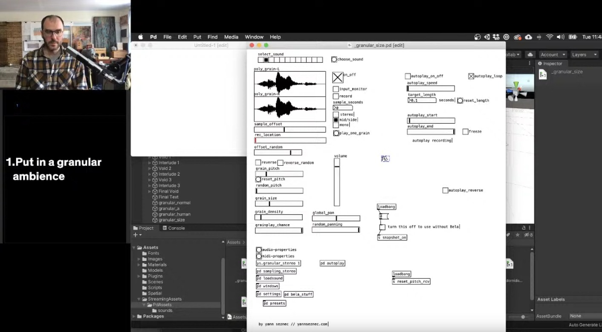

class: center, middle .title[Creative Coding / Game Dev 2] <br/><br/> .subtitle[Procedural audio in Unity] <br/><br/><br/><br/><br/><br/> .date[Mar 2023] <br/><br/><br/> .note[Created with [Liminal](https://github.com/jonathanlilly/liminal) using [Remark.js](http://remarkjs.com/) + [Markdown](https://github.com/adam-p/markdown-here/wiki/Markdown-Cheatsheet) + [KaTeX](https://katex.org)] ??? Author: Grigore Burloiu, UNATC --- name: toc class: left # ★ Table of Contents ★ <!-- omit in toc --> 1. [Procedural Audio](#procedural-audio) 2. [Options](#options) 3. [Example](#example) <!-- Comment out the next slide if you don't want the Table of Contents link --> --- layout: true .toc[[★](#toc)] --- name: procedural-audio # Procedural Audio .right-column[  ] [what is procedural audio?](https://web.archive.org/web/20220707134311/https://daracrawford.com/new-blog-3/what-is-procedural-audio) | Dara Crawford [are we there yet?](https://www.gdcvault.com/play/1012645/Procedural-Audio-for-Video-Games) | Nicolas Fournel @ GDC -- how? - generative - interactive -- - game event/data → audio -- - audio trigger/data → game action -- what? - sound fx - ambience - [music](https://splice.com/blog/adaptive-music-video-games/) --- ## iMUSE <iframe width="33%" height="33%" src="https://www.youtube.com/embed/AjtxK_WT784" title="YouTube video player" frameborder="0" allow="accelerometer; autoplay; clipboard-write; encrypted-media; gyroscope; picture-in-picture" allowfullscreen></iframe> <iframe width="32%" height="33%" src="https://www.youtube.com/embed/7N41TEcjcvM" title="YouTube video player" frameborder="0" allow="accelerometer; autoplay; clipboard-write; encrypted-media; gyroscope; picture-in-picture" allowfullscreen></iframe> <iframe width="33%" height="33%" src="https://www.youtube.com/embed/-XuClagw6IQ" title="YouTube video player" frameborder="0" allow="accelerometer; autoplay; clipboard-write; encrypted-media; gyroscope; picture-in-picture" allowfullscreen></iframe> [iMUSE and interactive game soundtracks](http://peter-silk-x3ql.squarespace.com/blog/2014/6/27/imuse-and-interactive-game-soundtracks) / Peter Silk --- name: options # Options in-game [audio](https://docs.unity3d.com/Manual/AudioOverview.html) [engine](https://learn.unity.com/search?k=%5B%22q%3AAudio%22%5D) -- external software (comms via OSC)  <img style="width:49%" src="../attachments/tanks2.png"> --- # Options<!-- omit in toc --> in-game [audio](https://docs.unity3d.com/Manual/AudioOverview.html) [engine](https://learn.unity.com/search?k=%5B%22q%3AAudio%22%5D) external software (comms via OSC) integrated / [middleware](https://videogameaudio.com/FullIndie-Apr2015/GameAudioMiddleware-FullIndie-SchoolOfVideoGameAudio-LPaul-Apr2015.pdf) - [FMOD](https://www.fmod.com/) - [WWise](https://www.audiokinetic.com/products/wwise/) -- - [Pd](https://puredata.info/) / [libpd](https://github.com/libpd/libpd) <br /><br /><br /> https://school.videogameaudio.com --- class: center name: libpd-integration ## libpd integration <img style="width:66%" src="https://raw.githubusercontent.com/LibPdIntegration/LibPdIntegrationExamples/master/docs/images/screenshot-spatialisation.jpg"> https://github.com/LibPdIntegration/ <iframe width="33%" height="200" src="https://www.youtube.com/embed/a4FBL6sARNI?list=PLXGA7pVjV1jdfe2FaEs2EzuZ-16HLH1_0" title="Unity & Pd Tutorial Ep.1: adding libpd to your Unity project" frameborder="0" allow="accelerometer; autoplay; clipboard-write; encrypted-media; gyroscope; picture-in-picture; web-share" allowfullscreen></iframe> --- class: center name: example # Example [](https://youtu.be/NVW-Aahz9QM?list=PL9mtAkCrEZavP0T_C4mLqKdxYD-4wURoZ&t=340) https://github.com/NiallMoody/black-and-secret-places